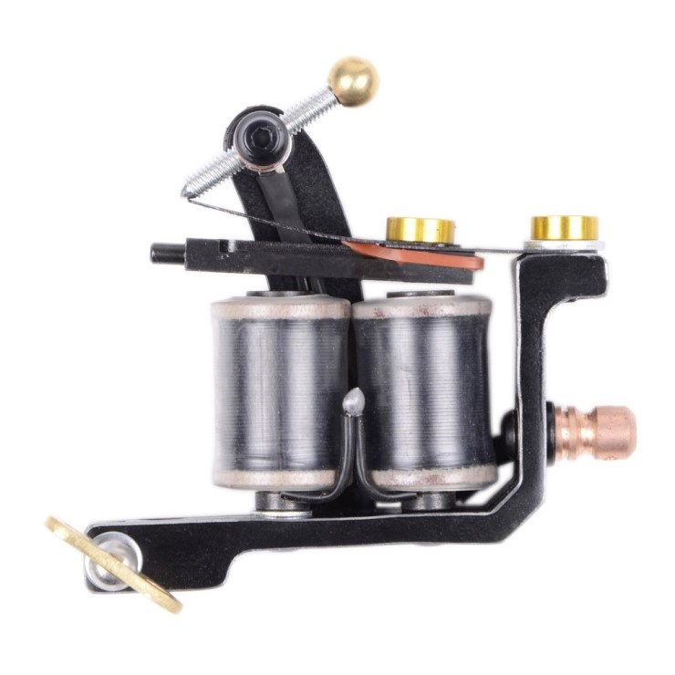
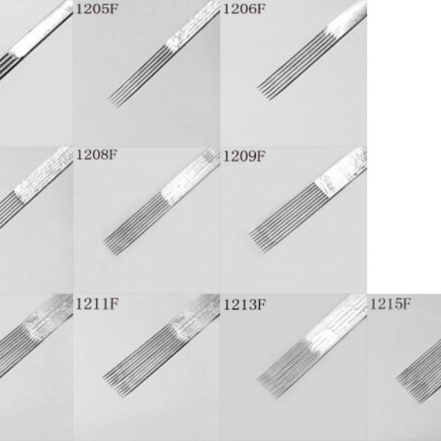
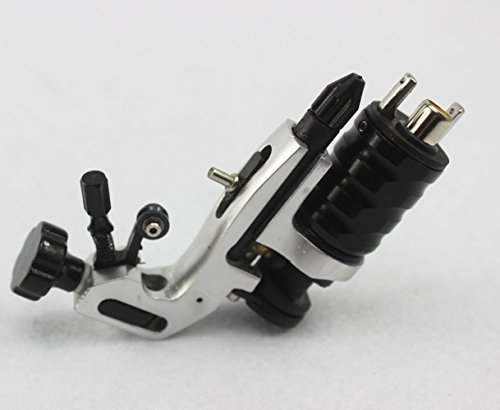
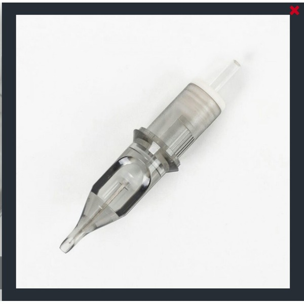

1. 코일머신
코일에 전기가 흐르면 가운데의 쇠가 자석이 되면서
아마추어 바 라고하는 위에 있는 쇠판을 끌어 당기는데요.
쇠판이 끌려오면, 위에 접지 되어있던 부분이 떨어져버려 전기가 흐리지 않아
이 쇠판은 자체의 탄성 힘에 의하여 원래 위치로 돌아가는형식입니다.
그리고 이렇게 생긴 바늘을 사용합니다~


2. 로터리머신
로터리는 기차바퀴가 돌아가는 원리의 반대라고 보시면 편한데요. 전기모터가 기차바퀴를 돌리면,
중심에 좀 멀리있는 지점에 크랭크 축이 연결되어
이 크랭크 축은 다시 회전운동을 직선운동으로 바꾸어 작동됩니다
그리고 이렇게 생긴 바늘을 사용합니다~
